The companion for Claude Code
cc-viewer runs your normal Claude Code session and wraps it in a real-time
web viewer — wire-level request tracing, a browser IDE, multi-agent orchestration,
and coding from any device. Everything Claude Code already does, now with X-ray vision.
Same claude command; you just type ccv.
claude
18 languages
MIT licensed
npm · Homebrew · Desktop

Up and running in seconds
cc-viewer sits on top of your existing Claude Code install and passes every launch flag straight through. Your workflow doesn't change — it just gains a viewer.
npm i -g cc-viewer or brew install cc-viewer. Node 20+ and Claude Code are the only prerequisites.
ccvccv launches Claude Code for you and attaches the viewer. Combine flags freely — ccv -c --d works exactly as you'd expect.
A web UI launches at localhost:7008 — on your machine, your phone, and every device on your LAN.
UltraPlan is a local build of Claude's own UltraPlan-style planning: a panel of specialist experts explores your task in parallel and converges on a plan you approve before anything runs — all inside your own Claude Code session. It reaches results well past the base model, with outstanding, repeatable quality — and none of the overhead of the alternatives.
| UltraPlan ✦ | Superpower | UltraCode (dynamic workflow) | |
|---|---|---|---|
| Execution performance | Excellent | Excellent | Good (but unstable) |
| Execution duration | 30 min–2 h | 1 h–3 h | 1 h–3 h |
| Suitable scenarios | Complex medium-to-long-range tasks | Complex extra-long-range tasks | Simple, repetitive, heavy-duty tasks |
| Token consumption | Medium | High | Ultra-high |
| Context pollution | Low | High | Low |
Watching Claude work shouldn't mean tabbing away to your editor. cc-viewer brings a VS Code-style workbench right next to the conversation.
Run Claude Code on the machine with your repo, then reach it from wherever you are — a touch-first mobile UI over your network, or straight from the chat apps your team already lives in.
cc-viewer patches fetch() so it sees the raw API traffic — not a trimmed transcript. The full system prompt, every tool schema, the complete SSE stream. Nothing is hidden.

Orchestrate a team
UltraPlan, Agent Teams and Workflows spin up specialists that research, build, review and verify in parallel. cc-viewer renders the whole choreography — as a live HUD, a Gantt timeline, and a cast of characters that draw themselves in.
Tool-permission prompts and AskUserQuestion modals render right in the viewer — approve remotely, or set auto-approve tiers for permissions and plans.
A live heads-up display and staged Gantt timeline track every agent's phase, model, tokens, tools and elapsed time as it runs.
17 hand-drawn role avatars — each a historical-figure portrait that sketches itself in — put a face on every teammate in the session.
Rewrite the system prompt Claude Code launches with — append to it or fully override it, globally or per workspace, with a separate tab per model. It matters most the moment you point Claude Code at a third-party model.
And a whole lot more
Everything else cc-viewer layers on top of Claude Code.
Enable, disable, import or delete Claude Code skills from the UI — with duplicate detection and symlink/traversal guards on every operation.
Remap model families, inject reasoning effort, and reroute requests on the fly — a built-in replacement for claude-code-router/switch, no restart.
Share one server across a team: fork preferences per project, and isolate log/history and the active session per named instance with ccv --pid.
A live gauge calibrated to Claude Code's own /context — including 1M windows — so you always know how much room is left.
Swappable voice packs announce plan approvals and completions — from a proper butler to Three Kingdoms generals — so you can step away.
Prefer the native CLI or the VS Code extension? Run ccv -logger to passively record every session to JSONL — zero workflow change.
Ready in one command
Requires Node.js 20+ and an existing Claude Code install.
Cross-platform, the classic route.
Recommended on macOS / Linux.
Native macOS / Windows build.
Keep the Claude Code you already run — just type ccv and the viewer comes with it. That's the whole setup.